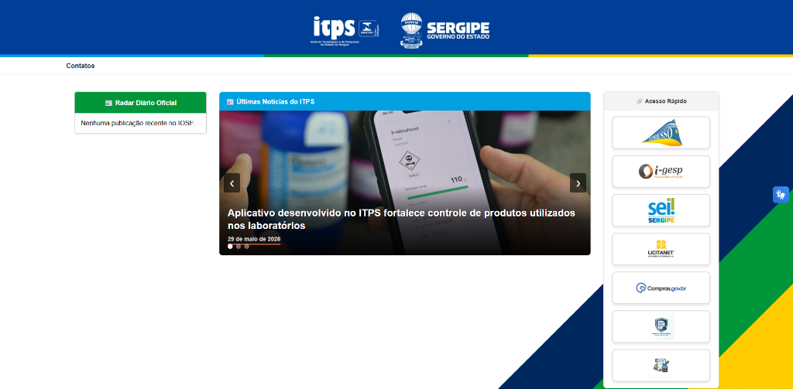

Manual do Portal & Intranet ITPS
Documentação técnica mapeando a infraestrutura pública e intranet administrativa do Instituto de Tecnologia e Pesquisa de Sergipe (ITPS), detalhando os robôs de automação e as telas de operações de RH e Financeiro.
info 1. Introdução ao Ecossistema ITPS
O ecossistema do ITPS consiste em uma arquitetura de alto impacto governamental que integra o portal oficial público ao sistema administrativo de uso interno da autarquia. A solução visa desburocratizar a gestão de servidores, assegurar a conformidade jurídica de contratos públicos e trazer transparência por meio de rotinas automatizadas por IA e web scraping.

Portal Oficial do ITPS integrado com o Radar do Diário Oficial (automação à esquerda) e o CMS de Notícias (centro).
smart_toy 2. Robô do Diário Oficial (Web Scraper Bot)
Uma automação robótica desenvolvida em Python que monitora e extrai informações oficiais diariamente, reduzindo de horas para segundos o tempo de triagem jurídica.
- Rotina de Raspagem: O bot inicia-se de forma agendada nas primeiras horas do dia, mapeando os servidores estaduais e baixando as edições mais recentes do Diário Oficial do Estado (DOE).
- Busca Semântica: Realiza uma varredura de strings de alta precisão buscando por termos estruturados como
"ITPS","Instituto de Tecnologia e Pesquisa", números de portarias e nomes de servidores. - Gatilho de Notificação: Caso o termo seja encontrado, a API gera uma notificação interna no painel da Procuradoria Jurídica do ITPS contendo o parágrafo da citação, link de download do diário e anexa o documento recortado.
newspaper 3. Portal Público e Gerenciador de Conteúdo (CMS)
Interface de comunicação oficial com a população sergipana. Permite a divulgação de laudos, pesquisas científicas e notícias de utilidade pública de forma ágil e otimizada para SEO.
- Carrossel Dinâmico: Slides rotativos panorâmicos configuráveis diretamente pelo painel administrativo para notícias de alta prioridade.
- Repositório de Pesquisas: Módulo de indexação de laudos analíticos e pesquisas tecnológicas públicas com suporte a anexos em PDF e filtros rápidos por departamento científico.
payments 4. Módulo de Folha de Pagamento (Intranet)
O módulo de Folha de Pagamento é o núcleo de gestão orçamentária de pessoal do RH do ITPS. Ele processa todas as remunerações dos servidores de forma 100% digital e segura.
Telas e Visões Operacionais:
admin_panel_settings 1. Tela do Gestor de RH (Processamento de Folha)
Painel completo contendo a listagem geral de servidores ativos (Efetivos, Cargos Comissionados e Bolsistas Científicos) conectado ao novo banco **PostgreSQL centralizado** sob o schema relacional folha.
badge 2. Painel Pessoal do Servidor (Contracheque Digital)
Tela simplificada e amigável onde o funcionário consulta seus rendimentos de forma rápida e autônoma, dispensando solicitações físicas ao RH.
Regras de Negócio e Cálculos Automatizados:
| Cálculo/Métrica | Gatilho / Condição | Ação Operacional do Sistema |
|---|---|---|
| Gratificação de Titulação | Conclusão de Especialização (15%), Mestrado (25%) ou Doutorado (40%). | Aumenta proporcionalmente o valor bruto da remuneração com base no salário-base após validação do diploma pelo RH. |
| Insalubridade Técnica | Servidores alocados em laboratórios de análises químicas, físicas ou de solo. | Soma ao vencimento um percentual configurado (10%, 20% ou 40%) sobre o salário-base conforme laudo do setor de segurança do trabalho. |
| Dedução de Faltas | Ausência não justificada detectada na importação biométrica do ponto. | Cálculo de desconto financeiro diário equivalente a 1/30 avos do salário por dia faltoso. |
description 5. Módulo de Gestão de Contratos e Convênios (Intranet)
Caminho no painel: /admin/contratos
Gerencia a saúde jurídica e orçamentária dos convênios tecnológicos e compras públicas com fornecedores de laboratórios de precisão do ITPS.
Telas e Visões Operacionais:
border_color 1. Tela de Cadastro de Contratos & Aditivos
Formulário unificado para lançar as diretrizes orçamentárias e fiscais do contrato governamental assinado, integrado ao schema contratos do PostgreSQL.
view_list 3. Módulo PCA (Plano de Contratações Anual) & e-DOC
Módulo avançado integrado à intranet para planejar e centralizar todas as contratações públicas previstas para o exercício governamental, contando com suporte web centralizado, ícone premium e conexões externas estatais.
ring_volume 2. Painel Monitor e Alerta de Vencimentos (Semáforo Inteligente)
Tela centralizadora que atua como sentinela orçamentária para a equipe jurídica, evitando a perda de prazos de rescisões ou prorrogações.
Regras de Negócio e Segurança de Vigência:
- Travamento de Aditivos Fiscais: O sistema impossibilita de forma programática a inserção de aditivos financeiros que extrapolem 25% do valor original do contrato, de acordo com as leis de licitação vigentes no país.
- Alerta Automatizado por E-mail: Um serviço rodando em segundo plano verifica os prazos à meia-noite e envia e-mails contendo o PDF do contrato e justificativa para a Procuradoria Jurídica do ITPS nos estágios amarelo e vermelho.
security 6. Níveis de Acesso & Infraestrutura DevOps (Docker)
Toda a intranet está blindada seguindo premissas da LGPD e apoiada em uma robusta infraestrutura de contêineres que facilita o deploy e a escalabilidade:
- Diretoria Geral: Acesso total de leitura e geração de relatórios de auditoria financeira gerais de folha e contratos públicos.
- Setor de RH: Acesso de escrita e edição para a Folha de Pagamento. Bloqueados nos painéis de aditivos orçamentários do setor jurídico.
- Procuradoria Jurídica: Permissão de edição e controle de contratos, termos aditivos, PCA e semáforo de vigência.
- Infraestrutura DevOps (Docker & Compose): Todo o ecossistema (Portal React/Vite, Backend FastAPI/Uvicorn e banco PostgreSQL) é orquestrado através de contêineres Docker independentes (
Dockerfilededicados) e um arquivodocker-compose.ymlunificado com mapeamento de volumes de rede de alto desempenho. Possui rotina de inicialização automática via scripts.bat(Windows) e.sh(Linux).